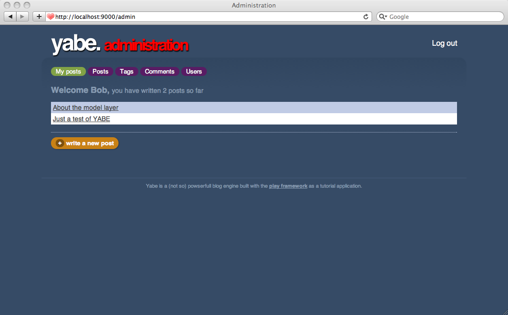
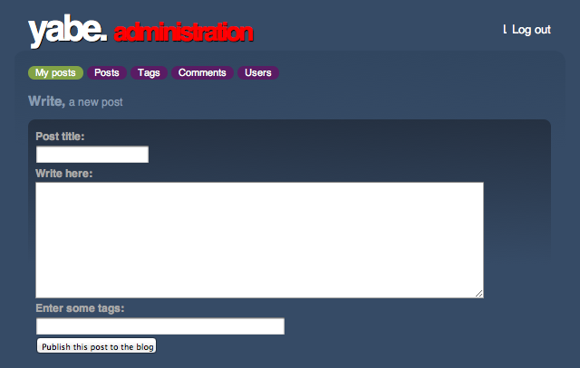

Creating a custom editor area
In the previous part we have created an administration area for yabe and prepared the ‘My posts’ section. This page will give each author a list of his own posts, and the ability to edit them or create a new one as well.
We could easily reuse the CRUD module as a basis for this page but here we will create something from scratch. We need a lot of personalization on these screens.
Start with the user posts list
We just need to retrieve and display the posts written by the connected user. Very easy. Start to enhance the Admin.index action:
public static void index() {
String user = Security.connected();
List<Post> posts = Post.find("author.email", user).fetch();
render(posts);
}
And complete the yabe/app/views/Admin/index.html:
#{extends 'admin.html' /}
<h3>Welcome ${user}, <span>you have written ${posts.size() ?: 'no'}
${posts.pluralize('post', 'posts')} so far</span></h3>
#{list items:posts, as:'post'}
<p class="post ${post_parity}">
<a href="#">${post.title}</a>
</p>
#{/list}
<p id="newPost" >
<a href="#"><span>+</span> write a new post</a>
</p>
The first screen is ready:

The ‘write a new post’ page
We will create a form to create a new post. Basically with a form you have two actions: one to display the form and one to handle the form submission. Let’s create the new Admin.form and Admin.save actions that will display and handle form submission:
Add the routes in the yabe/conf/routes file:
GET /admin/new Admin.form
POST /admin/new Admin.save
And add the form() and save() actions to the Admin.java controller:
public static void form() {
render();
}
public static void save() {
// Not implemented yet
}
Now you have to create the yabe/app/views/Admin/form.html template:
#{extends 'admin.html' /}
<h3>Write, <span>a new post</span></h3>
#{form @save()}
#{ifErrors}
<p class="error">
Please correct these errors.
</p>
#{/ifErrors}
<p>
#{field 'title'}
<label>Post title:</label>
<input type="text" name="${field.name}"
value="${post?.title}" />
<span class="error">#{error 'post.title' /}</span>
#{/field}
</p>
<p>
#{field 'content'}
<label>Write here:</label>
<textarea name="${field.name}">${post?.content}</textarea>
<span class="error">#{error 'post.content' /}</span>
#{/field}
</p>
<p>
#{field 'tags'}
<label>Enter some tags:</label>
<input type="text" size="50"
name="${field.name}" value="${post?.tags?.join(' ')}" />
#{/field}
</p>
<p>
<input type="submit" value="Publish this post to the blog" />
</p>
#{/form}
Finally, edit the yabe/app/views/Admin/index.html template to link the Write a new post button to this form:
...
<p id="newPost" >
<a href="@{form()}"><span>+</span> write a new post</a>
</p>
...
You can check the result:

Now we have to complete the Admin.save action to handle correctly the form submission. It will create a new Post object, convert the tag list to a real Tag objects set, validate all the fields and save it. If there is any problem it will redisplay the form to show the errors.
public static void save(String title, String content, String tags) {
// Create post
User author = User.find("byEmail", Security.connected()).first();
Post post = new Post(author, title, content);
// Set tags list
for(String tag : tags.split("\\s+")) {
if(tag.trim().length() > 0) {
post.tags.add(Tag.findOrCreateByName(tag));
}
}
// Validate
validation.valid(post);
if(validation.hasErrors()) {
render("@form", post);
}
// Save
post.save();
index();
}
Here we use render("@form") as a shortcut for render("Admin/form.html"). It just tells Play to use the form action’s default template.
Test it!
Reusing this stuff for editing Posts
We have defined the HTML form and the Java action able to create a new blog Post. But we also need to allow editing existing posts. We can easily reuse exactly the same code with a few modifications.
First we need the Admin.form to retrieve an existing Post:
public static void form(Long id) {
if(id != null) {
Post post = Post.findById(id);
render(post);
}
render();
}
As you see we made it optional, so the same action will retrieve an existing post only if the id parameter is filled. So you can now link the main screen’s post list to the edit form. Edit the yabe/app/views/Admin/index.html template:
#{extends 'admin.html' /}
<h3>Welcome ${user}, <span>you have written ${posts.size() ?: 'no'} ${posts.pluralize('post', 'posts')} so far</span></h3>
#{list items:posts, as:'post'}
<p class="post ${post_parity}">
<a href="@{Admin.form(post.id)}">${post.title}</a>
</p>
#{/list}
<p id="newPost" >
<a href="@{form()}"><span>+</span> write a new post</a>
</p>
Well, very easy but we have a problem. If you look at the actual URL generated by the Router for these links, you should see something like:
/admin/new?id=3
It works, but it’s not really pretty. We will define another route that will use a different URL pattern if the id parameter is submitted:
GET /admin/myPosts/{id} Admin.form
GET /admin/new Admin.form
As you can see we define this route before the old one, so it has a higher priority. That means that if an id parameter is submitted Play will prefer this URL pattern. If not, it will still use the old route.
Refresh the My posts page and you should get better URL on these links.
Now we need to modify the yabe/app/views/Admin/form.html template as well:
#{extends 'admin.html' /}
#{ifnot post?.id}
<h3>Write, <span>a new post</span></h3>
#{/ifnot}
#{else}
<h3>Edit, <span>this post</span></h3>
#{/else}
#{form @save(post?.id)}
#{ifErrors}
<p class="error">
Please correct these errors.
</p>
#{/ifErrors}
<p>
#{field 'title'}
<label>Post title:</label>
<input type="text" name="${field.name}"
value="${post?.title}" />
<span class="error">#{error 'post.title' /}</span>
#{/field}
</p>
<p>
#{field 'content'}
<label>Write here:</label>
<textarea name="${field.name}">
${post?.content}
</textarea>
<span class="error">#{error 'post.title' /}</span>
#{/field}
</p>
<p>
#{field 'tags'}
<label>Enter some tags:</label>
<input type="text" size="50"
name="${field.name}" value="${post?.tags?.join(' ')}" />
#{/field}
</p>
<p>
<input type="submit" value="Publish this post to the blog" />
</p>
#{/form}
As you can see we have updated the form destination action to add the post ID as the first action parameter if it exists. So when the post has an id field set (meaning that the post already exists in the system), it will be sent to the Admin.save action.
Now we can change the save() method a little to handle both creation and editing cases:
public static void save(Long id, String title, String content, String tags) {
Post post;
if(id == null) {
// Create post
User author = User.find("byEmail", Security.connected()).first();
post = new Post(author, title, content);
} else {
// Retrieve post
post = Post.findById(id);
// Edit
post.title = title;
post.content = content;
post.tags.clear();
}
// Set tags list
for(String tag : tags.split("\\s+")) {
if(tag.trim().length() > 0) {
post.tags.add(Tag.findOrCreateByName(tag));
}
}
// Validate
validation.valid(post);
if(validation.hasErrors()) {
render("@form", post);
}
// Save
post.save();
index();
}
And for better URL we will use the same trick as before, by adding a new preferred route if an id parameter exists:
POST /admin/myPosts/{id} Admin.save
POST /admin/new Admin.save
That’s done! Now we’re using the same action for both creating new blog posts and editing old ones, and the administration area is finished!